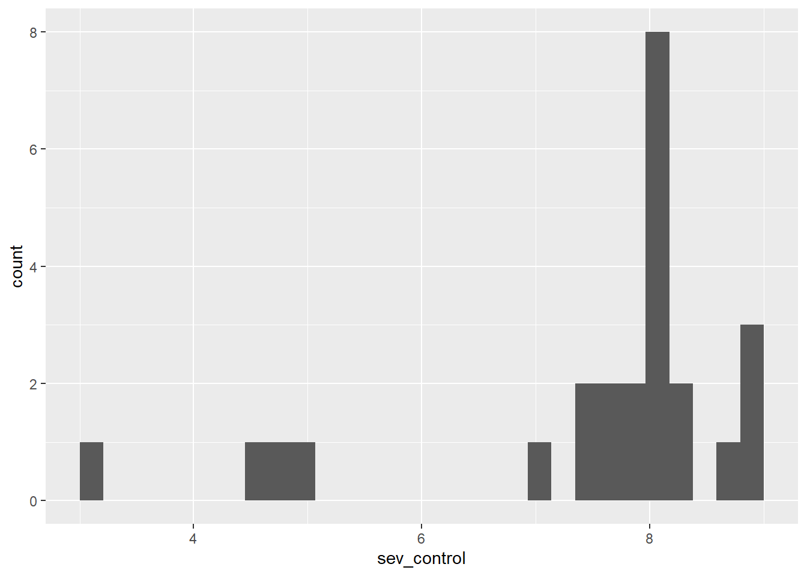
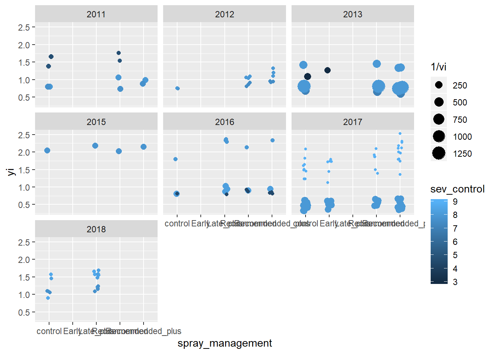
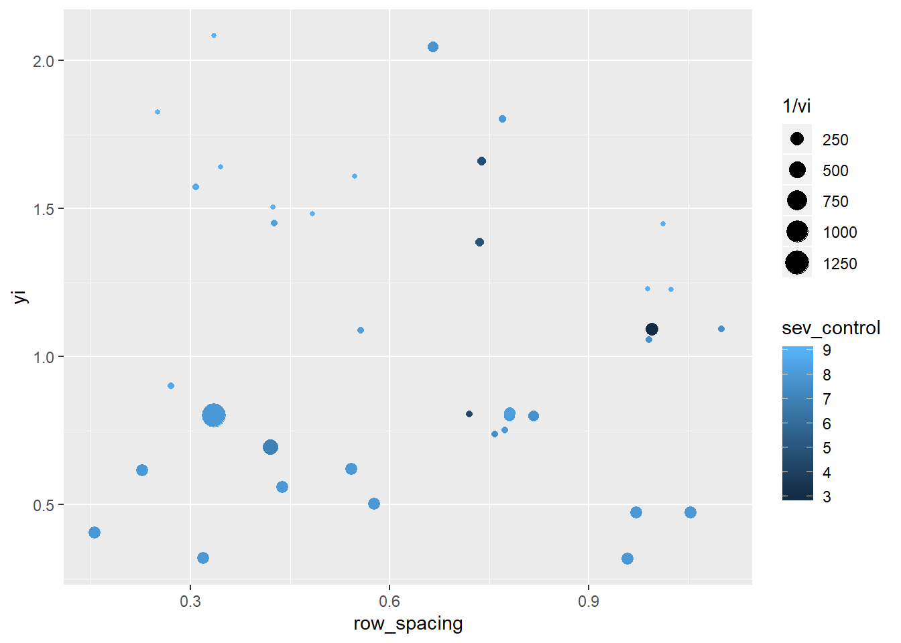
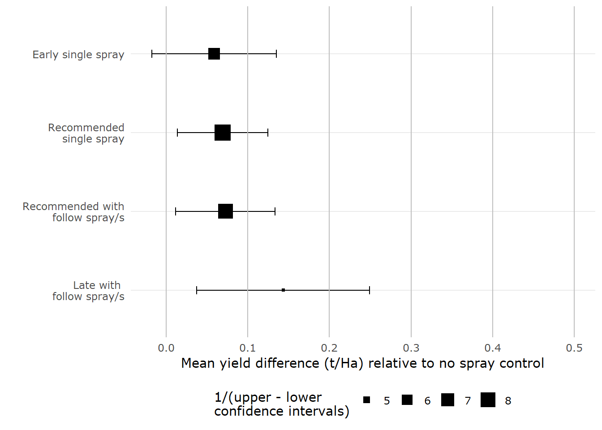
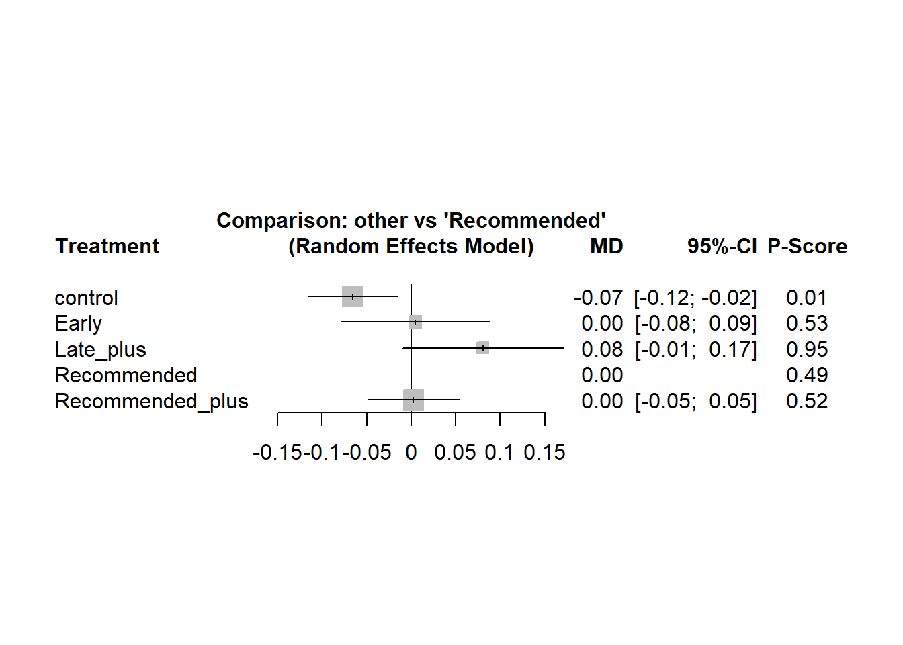
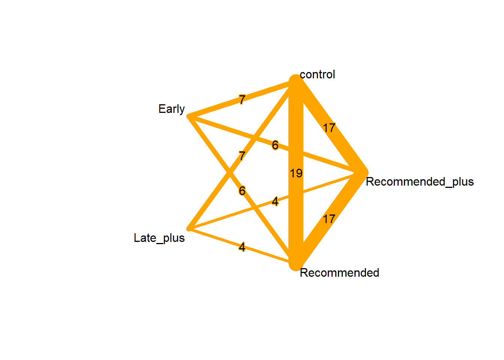
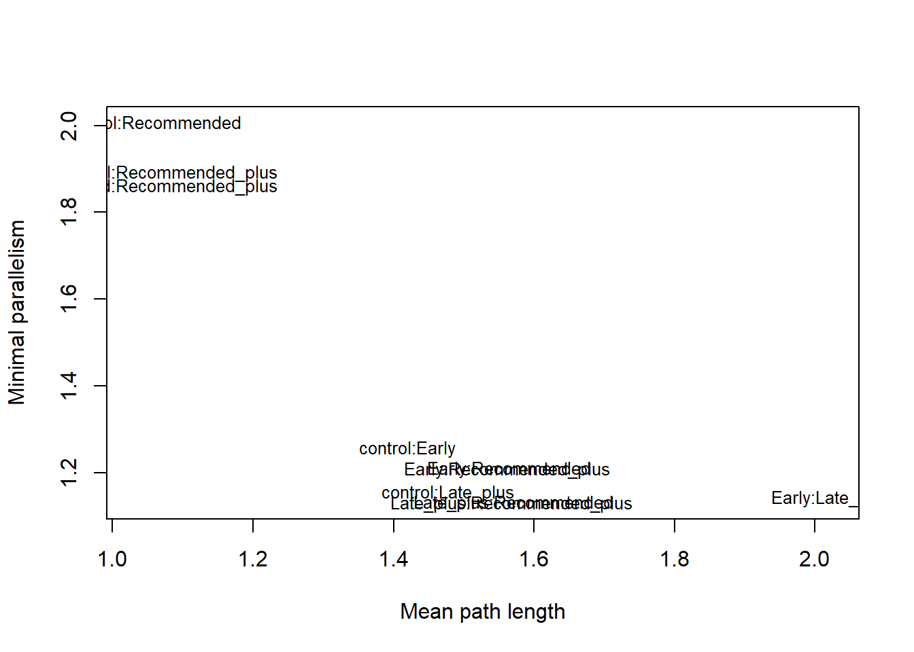

7 Fungicide treatments
## fungicide_ai n percent
## control 40 0.2649007
## propiconazole 48 0.3178808
## tebuconazole 63 0.4172185datPM <- datPM %>%
mutate(V = case_when(is.na(Y_Msquare) ~ mean(datPM$Y_Msquare, na.rm = TRUE),
TRUE ~ Y_Msquare),
yi = grain_yield.t.ha,
vi = V/n,
id = 1:nrow(datPM)) control <- datPM %>%
filter(spray_management == "control") %>%
group_by(trial) %>%
summarize(sev_control = mean(PM_final_severity))
control %>%
ggplot(aes(sev_control))+
geom_histogram()## `stat_bin()` using `bins = 30`. Pick better value with `binwidth`.
## Joining, by = "trial"datPM2 %>%
ggplot(aes(spray_management, yi, size = 1/vi, color = sev_control))+
geom_jitter(width = 0.1)+
facet_wrap(~year)
datPM2 %>%
filter(spray_management == "control") %>%
ggplot(aes(row_spacing, yi, size = 1/vi, color = sev_control))+
geom_jitter(width = 0.1)## Warning: Removed 1 rows containing missing values (geom_point).
library(metafor)
PM_mv1 <- rma.mv(yi, vi,
mods = ~ spray_management,
random = list(~ spray_management | trial, ~1 | id),
struct="UN", data=datPM2)## Warning: Some combinations of the levels of the inner factor never occurred.
## Corresponding rho value(s) fixed to 0.##
## Multivariate Meta-Analysis Model (k = 145; method: REML)
##
## Variance Components:
##
## estim sqrt nlvls fixed factor
## sigma^2 0.0006 0.0250 145 no id
##
## outer factor: trial (nlvls = 23)
## inner factor: spray_management (nlvls = 5)
##
## estim sqrt k.lvl fixed level
## tau^2.1 0.2294 0.4790 38 no control
## tau^2.2 0.2487 0.4986 13 no Early
## tau^2.3 0.2934 0.5417 20 no Late_plus
## tau^2.4 0.2481 0.4981 30 no Recommended
## tau^2.5 0.2835 0.5325 44 no Recommended_plus
##
## rho.cntr rho.Erly rho.Lt_p rho.Rcmm rho.Rcm_ cntr
## control 1 0.9974 0.9978 0.9972 0.9943 -
## Early 0.9974 1 0.0000 1.0000 0.9994 7
## Late_plus 0.9978 0.0000 1 1.0000 0.9992 7
## Recommended 0.9972 1.0000 1.0000 1 0.9995 19
## Recommended_plus 0.9943 0.9994 0.9992 0.9995 1 17
## Erly Lt_p Rcmm Rcm_
## control no no no no
## Early - yes no no
## Late_plus 0 - no no
## Recommended 6 4 - no
## Recommended_plus 6 4 17 -
##
## Test for Residual Heterogeneity:
## QE(df = 140) = 2260.9331, p-val < .0001
##
## Test of Moderators (coefficients 2:5):
## QM(df = 4) = 10.7893, p-val = 0.0290
##
## Model Results:
##
## estimate se zval pval ci.lb
## intrcpt 1.1415 0.1027 11.1168 <.0001 0.9403
## spray_managementEarly 0.0586 0.0390 1.5018 0.1332 -0.0179
## spray_managementLate_plus 0.1434 0.0541 2.6498 0.0081 0.0373
## spray_managementRecommended 0.0691 0.0284 2.4326 0.0150 0.0134
## spray_managementRecommended_plus 0.0724 0.0311 2.3268 0.0200 0.0114
## ci.ub
## intrcpt 1.3428 ***
## spray_managementEarly 0.1351
## spray_managementLate_plus 0.2494 **
## spray_managementRecommended 0.1247 *
## spray_managementRecommended_plus 0.1334 *
##
## ---
## Signif. codes: 0 '***' 0.001 '**' 0.01 '*' 0.05 '.' 0.1 ' ' 1##
## Hypotheses:
## 1: spray_managementEarly - spray_managementLate_plus = 0
## 2: spray_managementLate_plus - spray_managementRecommended = 0
## 3: spray_managementLate_plus - spray_managementRecommended_plus = 0
## 4: -spray_managementRecommended + spray_managementRecommended_plus = 0
## 5: spray_managementEarly + spray_managementRecommended_plus = 0
##
## Results:
## estimate se zval pval
## 1: -0.0847 0.0622 -1.3612 0.1735
## 2: 0.0743 0.0537 1.3828 0.1667
## 3: 0.0709 0.0535 1.3254 0.1850
## 4: 0.0034 0.0257 0.1311 0.8957
## 5: 0.1311 0.0593 2.2114 0.0270results <- data.frame(cbind(PM_mv1$b,
PM_mv1$ci.lb,
PM_mv1$ci.ub))
results <- cbind(rownames(results), results)
rownames(results) <- NULL
colnames(results)<- c("treat","mean","lci", "uci")
results$treat <- factor(results$treat, levels = results$treat[c(1,3,5,4,2)])
results %>%
filter(treat != "intrcpt") %>%
ggplot(aes(treat, mean))+
geom_point(aes(size = 1/(uci-lci)), shape =15)+
scale_size(name = "1/(upper - lower\nconfidence intervals)")+
geom_errorbar(aes(ymin = lci, ymax = uci), width = 0.1)+
scale_x_discrete(labels = c("Late with \n follow spray/s","Recommended with\n follow spray/s","Recommended\n single spray","Early single spray"))+
labs(y = "Mean yield difference (t/Ha) relative to no spray control",
x = " ") +
geom_hline(yintercept = seq(from = 0,to = 0.5, by = 0.1), colour = "grey")+
coord_flip()+
theme_usq()
library(netmeta)
datPM3 <- datPM2 %>%
group_by(trial, spray_management, n) %>%
summarize(yi_mean = mean(yi),
vi_mean = mean(vi)) %>%
ungroup()
PM_con <- pairwise(treat = spray_management,
n = n,
mean = yi_mean,
sd = sqrt(vi_mean),
studlab= trial,
data = datPM3,
sm="MD")## Number of studies: k = 23
## Number of treatments: n = 5
## Number of pairwise comparisons: m = 87
## Number of designs: d = 6
##
## Fixed effects model
##
## Treatment estimate (sm = 'MD'):
## control Early Late_plus Recommended Recommended_plus
## control . -0.0532 -0.1111 -0.0304 -0.0131
## Early 0.0532 . -0.0579 0.0228 0.0401
## Late_plus 0.1111 0.0579 . 0.0807 0.0980
## Recommended 0.0304 -0.0228 -0.0807 . 0.0173
## Recommended_plus 0.0131 -0.0401 -0.0980 -0.0173 .
##
## Lower 95%-confidence limit:
## control Early Late_plus Recommended Recommended_plus
## control . -0.1067 -0.1711 -0.0555 -0.0384
## Early -0.0003 . -0.1363 -0.0319 -0.0147
## Late_plus 0.0511 -0.0205 . 0.0204 0.0376
## Recommended 0.0053 -0.0775 -0.1411 . -0.0082
## Recommended_plus -0.0122 -0.0948 -0.1584 -0.0427 .
##
## Upper 95%-confidence limit:
## control Early Late_plus Recommended Recommended_plus
## control . 0.0003 -0.0511 -0.0053 0.0122
## Early 0.1067 . 0.0205 0.0775 0.0948
## Late_plus 0.1711 0.1363 . 0.1411 0.1584
## Recommended 0.0555 0.0319 -0.0204 . 0.0427
## Recommended_plus 0.0384 0.0147 -0.0376 0.0082 .
##
## Random effects model
##
## Treatment estimate (sm = 'MD'):
## control Early Late_plus Recommended Recommended_plus
## control . -0.0697 -0.1459 -0.0654 -0.0681
## Early 0.0697 . -0.0762 0.0043 0.0017
## Late_plus 0.1459 0.0762 . 0.0805 0.0779
## Recommended 0.0654 -0.0043 -0.0805 . -0.0026
## Recommended_plus 0.0681 -0.0017 -0.0779 0.0026 .
##
## Lower 95%-confidence limit:
## control Early Late_plus Recommended Recommended_plus
## control . -0.1510 -0.2346 -0.1152 -0.1190
## Early -0.0115 . -0.1914 -0.0798 -0.0828
## Late_plus 0.0572 -0.0391 . -0.0100 -0.0129
## Recommended 0.0156 -0.0885 -0.1710 . -0.0543
## Recommended_plus 0.0171 -0.0862 -0.1687 -0.0490 .
##
## Upper 95%-confidence limit:
## control Early Late_plus Recommended Recommended_plus
## control . 0.0115 -0.0572 -0.0156 -0.0171
## Early 0.1510 . 0.0391 0.0885 0.0862
## Late_plus 0.2346 0.1914 . 0.1710 0.1687
## Recommended 0.1152 0.0798 0.0100 . 0.0490
## Recommended_plus 0.1190 0.0828 0.0129 0.0543 .
##
## Quantifying heterogeneity / inconsistency:
## tau^2 = 0.0050; tau = 0.0711; I^2 = 53.9% [35.8%; 66.9%]
##
## Tests of heterogeneity (within designs) and inconsistency (between designs):
## Q d.f. p-value
## Total 99.70 46 < 0.0001
## Within designs 73.34 39 0.0007
## Between designs 26.37 7 0.0004forest(net_con, reference.group = 4,
rightcols=c("effect", "ci", "Pscore"),
rightlabs="P-Score", small.values = "bad")
## P-score (fixed) P-score (random)
## Late_plus 0.9802 0.9537
## Early 0.6914 0.5268
## Recommended_plus 0.2531 0.5165
## Recommended 0.5277 0.4889
## control 0.0475 0.0141netgraph(net_con,
plastic = FALSE,
col = "orange",
thickness = "number.of.studies",
points = FALSE,
col.points = "black",
cex.points = 1,
number.of.studies = TRUE,
cex.number.of.studies = 1,
col.number.of.studies = "black",
bg.number.of.studies = "orange",
multiarm = FALSE,
col.multiarm = "lightblue",
pos.number.of.studies = 0.5)
## League table (fixed effect model):
##
## control -0.0775 [-0.1384; -0.0166]
## -0.0532 [-0.1067; 0.0003] Early
## -0.1111 [-0.1711; -0.0511] -0.0579 [-0.1363; 0.0205]
## -0.0304 [-0.0555; -0.0053] 0.0228 [-0.0319; 0.0775]
## -0.0131 [-0.0384; 0.0122] 0.0401 [-0.0147; 0.0948]
##
## -0.1620 [-0.2325; -0.0916] -0.0268 [-0.0521; -0.0016]
## . -0.0302 [-0.1021; 0.0417]
## Late_plus 0.1007 [ 0.0267; 0.1748]
## 0.0807 [ 0.0204; 0.1411] Recommended
## 0.0980 [ 0.0376; 0.1584] 0.0173 [-0.0082; 0.0427]
##
## -0.0085 [-0.0340; 0.0170]
## 0.0125 [-0.0594; 0.0844]
## 0.0105 [-0.0635; 0.0845]
## 0.0163 [-0.0092; 0.0418]
## Recommended_plus
##
## League table (random effects model):
##
## control -0.0737 [-0.1648; 0.0174]
## -0.0697 [-0.1510; 0.0115] Early
## -0.1459 [-0.2346; -0.0572] -0.0762 [-0.1914; 0.0391]
## -0.0654 [-0.1152; -0.0156] 0.0043 [-0.0798; 0.0885]
## -0.0681 [-0.1190; -0.0171] 0.0017 [-0.0828; 0.0862]
##
## -0.1800 [-0.2811; -0.0790] -0.0598 [-0.1103; -0.0094]
## . -0.0344 [-0.1400; 0.0711]
## Late_plus 0.0953 [-0.0158; 0.2064]
## 0.0805 [-0.0100; 0.1710] Recommended
## 0.0779 [-0.0129; 0.1687] -0.0026 [-0.0543; 0.0490]
##
## -0.0600 [-0.1120; -0.0080]
## 0.0002 [-0.1054; 0.1058]
## 0.0066 [-0.1046; 0.1177]
## -0.0047 [-0.0568; 0.0473]
## Recommended_plus## Q statistics to assess homogeneity / consistency
##
## Q df p-value
## Total 99.70 46 < 0.0001
## Within designs 73.34 39 0.0007
## Between designs 26.37 7 0.0004
##
## Design-specific decomposition of within-designs Q statistic
##
## Design Q df p-value
## control:Late_plus 0.87 2 0.6481
## control:Recommended 0.07 1 0.7923
## control:Early:Recommended:Recommended_plus 10.50 15 0.7872
## control:Late_plus:Recommended:Recommended_plus 15.23 9 0.0848
## control:Recommended:Recommended_plus 46.67 12 < 0.0001
##
## Between-designs Q statistic after detaching of single designs
##
## Detached design Q df p-value
## control:Early 21.10 6 0.0018
## control:Late_plus 25.45 6 0.0003
## control:Recommended 25.14 6 0.0003
## control:Early:Recommended:Recommended_plus 19.51 4 0.0006
## control:Late_plus:Recommended:Recommended_plus 9.58 4 0.0482
## control:Recommended:Recommended_plus 11.28 5 0.0461
##
## Q statistic to assess consistency under the assumption of
## a full design-by-treatment interaction random effects model
##
## Q df p-value tau.within tau2.within
## Between designs 8.82 7 0.2659 0.0635 0.0040## Back-calculation method to split direct and indirect evidence
##
## Fixed effect model:
##
## comparison k prop nma direct indir. Diff z p-value
## control:Early 7 0.77 -0.0532 -0.0775 0.0290 -0.1065 -1.64 0.1013
## control:Late_plus 7 0.73 -0.1111 -0.1620 0.0234 -0.1855 -2.70 0.0068
## control:Recommended 19 0.99 -0.0304 -0.0268 -0.3155 0.2887 2.48 0.0131
## control:Recommended_plus 17 0.98 -0.0131 -0.0085 -0.2782 0.2697 2.71 0.0067
## Early:Late_plus 0 0 -0.0579 . -0.0579 . . .
## Early:Recommended 6 0.58 0.0228 -0.0302 0.0958 -0.1260 -2.23 0.0259
## Early:Recommended_plus 6 0.58 0.0401 0.0125 0.0783 -0.0658 -1.16 0.2450
## Late_plus:Recommended 4 0.67 0.0807 0.1007 0.0410 0.0597 0.92 0.3598
## Late_plus:Recommended_plus 4 0.67 0.0980 0.0105 0.2722 -0.2617 -4.01 < 0.0001
## Recommended:Recommended_plus 17 1.00 0.0173 0.0163 0.2233 -0.2070 -1.11 0.2690
##
## Random effects model:
##
## comparison k prop nma direct indir. Diff z p-value
## control:Early 7 0.80 -0.0697 -0.0737 -0.0545 -0.0192 -0.19 0.8519
## control:Late_plus 7 0.77 -0.1459 -0.1800 -0.0316 -0.1484 -1.38 0.1677
## control:Recommended 19 0.98 -0.0654 -0.0598 -0.2870 0.2271 1.38 0.1670
## control:Recommended_plus 17 0.96 -0.0681 -0.0600 -0.2636 0.2036 1.52 0.1277
## Early:Late_plus 0 0 -0.0762 . -0.0762 . . .
## Early:Recommended 6 0.64 0.0043 -0.0344 0.0718 -0.1063 -1.19 0.2335
## Early:Recommended_plus 6 0.64 0.0017 0.0002 0.0043 -0.0041 -0.05 0.9635
## Late_plus:Recommended 4 0.66 0.0805 0.0953 0.0514 0.0439 0.45 0.6532
## Late_plus:Recommended_plus 4 0.67 0.0779 0.0066 0.2210 -0.2144 -2.18 0.0292
## Recommended:Recommended_plus 17 0.99 -0.0026 -0.0047 0.1364 -0.1411 -0.65 0.5161
##
## Legend:
## comparison - Treatment comparison
## k - Number of studies providing direct evidence
## prop - Direct evidence proportion
## nma - Estimated treatment effect (MD) in network meta-analysis
## direct - Estimated treatment effect (MD) derived from direct evidence
## indir. - Estimated treatment effect (MD) derived from indirect evidence
## Diff - Difference between direct and indirect treatment estimates
## z - z-value of test for disagreement (direct versus indirect)
## p-value - p-value of test for disagreement (direct versus indirect)nm1 <- netmeasures(net_con)
plot(nm1$meanpath, nm1$minpar, pch="",
xlab="Mean path length", ylab="Minimal parallelism")
text(nm1$meanpath, nm1$minpar, names(nm1$meanpath), cex=0.8)